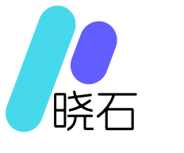

智算平台
Rune
融合 AI 模型开发、推理流程与云原生应用运行环境。

异构 GPU（NVIDIA、昇腾、海光等）难以统一调度池化，资源利用率低。
大模型微调到推理缺乏标准化流程，模型缺乏可靠分发和运行机制。
多租户数据隔离难，API 调用缺乏内容合规审计与精确的限流计费。
缺乏统一的模型与数据集管理仓库，内部创新难以沉淀、版本极易混乱，团队协作成本居高不下。
专为 AI 开发与部署的未来而构建，统一管理 AI 基础设施、模型与应用
打通底层算力、模型资产与应用入口，让企业 AI 从试点探索走向规模化落地。
融合 AI 模型开发、推理流程与云原生应用运行环境。
企业 AI 与应用资产管理协作中心，沉淀模型、数据集与镜像资产。
多渠道大模型 API 网关与内容安全审计，提供统一接入与治理能力。
推理、微调、实验、评测与应用在一个平台内闭环协作。
模型、数据集与应用资产可沉淀、可复用、可持续演进。
统一接入、内容审计、治理计量与私有化部署能力完整覆盖。
从底层异构算力到平台服务、资产沉淀与安全治理，Rune AI 以一套统一架构承接企业 AI 的研发、部署与规模化运营。
面向企业 API 暴露和多租户访问控制，保障调用可管、可审、可追溯。
统一管理模型、数据集、镜像和应用模板，让团队经验沉淀为长期复用资产。
提供标准化工作流，缩短从实验、微调到上线交付的整体链路。
打通多厂商芯片、集群和存储资源，形成企业级 AI 共享与弹性调度底座。
八大核心功能模块覆盖部署、微调、开发、评测、资产管理与运行观测，让 AI 团队在一个工作空间内完成研发到上线交付。
打破硬件壁垒，统一接入多厂商算力资源，通过池化切分与智能调度，让企业 AI 训练与推理效率最大化。
核心能力： Rune AI 将多厂商兼容、资源池化与智能调度整合为一套统一底座，最大化企业算力投资回报。
全面兼容 GPU / NPU / DCU / PPU / XPU 等多类 AI 芯片与云上算力，统一纳入企业级算力视图。
把分散 GPU / NPU 资源统一池化，并按任务需求做精细化切分与分配。
一套算力底座，按业务场景分配最合适的资源形态。
适合开发调试、轻量推理、多人同时使用的常驻场景。
适合小批量训练、实验任务与预算敏感型业务申请。
面向 AI 训练与 HPC 混合负载，按任务特征自动选择更合适的调度策略。
从开发环境、微调任务到弹性推理和持续观测，Rune AI 将模型从实验室推向生产环境的全链路压缩到一个统一流程中。
内置丰富开发环境模板，支持从 JupyterLab 到 VSCode 的多样化开发体验。
提供预置多种微调模板，简化分布式训练工作流和任务配置流程。
支持 Windows、Linux 等多种操作系统，保障桌面仿真环境无缝迁移。
具备自动扩缩容能力的高性能模型服务，支持多层级 API 发布。
实时实验数据、应用日志流式监控与事件追踪，持续反馈运行状态。
POST https://api.rune.ai/v1/chat/completions
以一个统一入口承接多模型 API 接入、路由回退、配额计量与安全审计，让企业从“能调用”走向“可治理、可运营、可扩展”。
统一 API 入口
兼容 OpenAI API 与 Anthropic API 请求格式，支持流式输出与多模态接入。
按模型能力、成本和可用性选择最优通道，并支持首选路由和自动降级。
基于 RPM、TPM 和 Token 消耗做多维限速、配额管理与租户级成本统计。
内置内容审查、IP 白名单和审计留痕，把访问治理和风控前置到统一网关层。
类 HuggingFace / ModelScope 的私有化 AI 资产管理平台，让模型、数据、镜像、应用与技能在企业内部持续沉淀、复用和协作演进。
从模型到数据、镜像、应用、MCP 服务和技能市场，Moha Hub 把企业内部 AI 资产汇聚为统一的协作社区。
支持 Git-based 版本管理、文件浏览、提交历史与分支协作。
覆盖 NLP、CV、多模态等 50+ 任务类型的数据集管理与共享。
兼容 OCI 标准服务，统一托管企业内部容器镜像并支持漏洞更新。
自动构建并运行 AI 应用和工具组件，支持在线预览与全生命周期管理。
基于 MCP Server 的模型技能预置中心，支持技能的一键部署与共享。
面向企业内部的模型技能市场，沉淀各领域可直接调用的能力模板。
pip install xiaoshiai-hub
Successfully installed xiaoshiai-hub
moha login
✔ Successfully logged in to Moha Hub
moha upload -t models -e --encryption-password "your-password" -a SM4 deepseek-ai/DeepSeek-V3
公开 / 内部 / 私有三层权限体系，确保资产共享边界清晰可控。
讨论区、标签系统与版本记录共同促进知识沉淀和团队协作。
支持模型加密存储，破晓石自研解密库可适配 vLLM、SGLang 等推理框架。
支持镜像站同步与 API / SDK 集成，让企业资产持续保持新鲜并易于接入。
把数据库、中间件、AI 应用和行业模板统一收敛到一个应用市场中，让业务团队基于预置参数即可零代码完成部署、挂载存储和后续运维。
预置模型接入、向量库与鉴权配置，快速搭建企业级 AI 工作流应用。
支持快速拉起 Bot 服务、工具编排环境和回调配置，适合业务验证与交付演示。
面向图像与多模态场景的可视化工作流模板，自动绑定 GPU 与共享存储。
标准数据库模板，支持高可用参数、卷挂载与备份策略，适合作为 AI 应用基础数据底座。
支持副本集部署与监控接入，可快速承载日志、会话和业务元数据等多样化负载。
企业可沉淀专属开发模板，统一镜像、依赖、数据挂载和安全策略，避免重复造轮子。
按 AI 应用、数据库、工作流或企业专属分类快速筛选。
预置镜像、端口、环境变量与资源规格，减少重复配置。
兼容对象存储、块存储与文件系统，满足存算分离场景。
自动进入实例监控、日志查看、伸缩和版本升级流程。
部署、扩容、升级、回滚、下线统一在平台内完成。
统一挂载存储和访问策略，支撑企业级数据归集与治理。
实例健康、日志和资源利用率自动接入平台监控体系。
把成功实践固化为企业模板，形成可复用的交付资产。
把模型试用、参数调试、推理展示与 API 集成收敛到同一个 LLM Playground 中，让开发者和业务团队在一页内完成评估、对比和接入判断。
请基于企业知识库，为一家制造业客户生成“设备巡检 Copilot”落地方案，要求包含部署架构、数据安全策略和 ROI 预估。
先在 ChatApp 完成提示词和参数验证，再经 LLM Gateway 发布租户级 API，后接巡检应用与知识检索链路。
采用工作空间隔离、审计日志、敏感词过滤与设备文档脱敏，保证生产资料不跨租户泄露。
优先覆盖 SOP 检索、异常问答与报告草拟场景，再逐步推广到移动巡检与培训辅导。
支持在同一问题下切换或并排评估多个模型，直观看回答质量、延迟与风格差异。
围绕 System Prompt、上下文与输出目标快速迭代，验证业务口径和回复结构是否稳定。
可在同一会话内查看联网结果与引用来源，适合知识更新频繁的业务场景。
兼容文本、图片和文档理解，为质检、巡检、图文问答等场景保留扩展空间。
统一继承路由、内容审查、速率限制与审计日志，不绕开平台治理闭环。
支持展示 reasoning 过程与关键推断节点，辅助评估复杂任务的稳定性。
/openai/v1/chat/completions
chatapp-route / deepseek-r1 / qwen-max
API Key / 审计 / 内容过滤
作为企业级平台的统一运营中枢，BOSS 把多集群、租户体系、资源配额、模板发布与平台设置收敛到同一个全局控制面中，让运营、平台和安全团队在一个视图内完成治理、监控和策略分发。
统一注册计算、存储与系统应用，把节点、资源池、规格和告警事件拉到一个运营视角中持续跟踪。
用多租户、工作空间和身份系统把平台访问边界管清楚，让组织架构、账号体系与权限分配同步落地。
从底层算力资源到上层应用模版，统一承接运营监控、安全策略和平台配置，保证企业级 AI 平台的持续可控运行。
集群指标、租户行为、告警事件和审计记录统一汇聚，形成持续可追踪的运营看板。
配额、模版发布、身份规则和平台配置通过统一控制面下发到不同产品和工作空间。
系统成员、平台参数和产品级开关在同一配置坞舱内统一维护，保障智算平台、Moha Hub 和大模型网关的独立配置与一致治理。
面向 CPU、内存、GPU、存储和网络资源建立租户级与工作空间级双层配额体系，保证共享资源下的公平与可控。
将推理、微调、开发、实验和评测模版纳入同一版本和发布体系，让平台运营者既能控质量，也能加快模版交付效率。
从一家公司共享基础设施向上切分部门级租户资源池与工作空间边界，让算力、存储、网络和数据在统一平台内被高效复用，同时保持严格隔离和可控访问。
底层异构资源池统一供给，上层按部门切分租户配额池、命名空间、网络与存储边界，让各部门在同一平台内独立运行。
负责模型训练、推理与评测，拥有独立成员、模型可见性和实验资源配额。
围绕客服机器人、知识问答和工单助手建设应用，避免和研发任务混用资源与数据。
承接敏感文档审查、审计追溯和规则校验，确保数据、日志和实例始终留在本部门边界内。
每个租户拥有独立 CPU / GPU / Memory / Storage 上限
工作空间与运行实例隔离到独立命名空间和运行域
存储路径、镜像可见性和 API Key 都围绕租户边界收口
把节点健康、工作负载、资源消耗、API 调用链、实例生命周期与配置变更收敛到同一张运营画布中，让平台团队从“事后排查”切换到“实时感知与主动处置”。
面对企业级 AI 建设，市场上的平台往往分别偏向公有云托管、单一芯片生态或开源协作社区。Rune AI 的重点不是做一项能力最强，而是把企业真正需要同时成立的几条关键链路统一收进一个可私有化、可治理、可扩展的平台中。
更偏公有云托管路径
可落本地，偏华为体系
仍受宿主环境约束
平台与数据都掌握在企业内部
以主流云侧资源为主
昇腾生态能力突出
不以国产异构资源池为目标
昇腾、海光、NVIDIA 统一纳管
需借助外部资产体系补齐
不以内置私有资产社区为核心
擅长模型与数据协作沉淀
Moha Hub 原生打通模型、数据与应用
需要额外拼接治理链路
网关能力通常不在主平台内闭环
缺统一企业网关控制面
API、限流、计费与审计一体化
偏云账号与资源域隔离
企业治理能力较完整
能力收束在协作产品边界内
租户、空间、配额与 RBAC 一体化
具备基础云侧审查能力
规则能力偏基础配置
更多依赖外部合规体系拼装
内容审查、审计与企业策略联动
企业选择 Rune AI，不是在采购一组零散功能，而是在选择一套能支撑试点启动、组织治理与规模化落地的 AI 工程底座。它更强调本土化、模块化和全链路协同，让平台能力能够随着业务一起生长。
以云原生底座为核心，把算力管理、模型资产、应用交付与治理控制统一收敛到同一个企业级 AI 平台中。
深耕云原生与 AI 平台工程化，产品架构已在多类企业级场景中反复验证，能够稳定承接从底座建设到 AI 能力交付的长期演进。
基于 KubeGems 等自研开源项目沉淀社区能力，并结合培训、实施与联合创新机制，让内部经验能够持续复用和外溢。
深度支持国产芯片生态、数据安全约束与信创环境要求，更适合需要本地部署、审计合规和自主可控的企业场景。
从算力调度、模型资产、训练推理到 API 网关治理与运营监控，一站式闭环减少企业在多平台之间拼接与迁移的成本。
支持单模块部署与分阶段建设，企业可以围绕最急迫的场景先启动，再逐步扩展到完整平台能力，降低前期投入门槛。
依托云原生基础架构和快速迭代机制，既能支撑前期低成本试点，也能在后期平滑扩展到更大规模的生产环境。
从轻量试点到集团化运营，企业可以像选择产品版本一样选择最适合当前阶段的 Rune 部署方案。
面向方案验证、售前演示和小型团队试用，以最小资源成本快速搭建完整平台闭环。
面向正式生产环境，构建高可用控制面与可扩展节点池，兼顾稳定性、弹性与持续升级能力。
面向跨地域、跨数据中心或多组织协同的大型企业，把多个独立集群收敛为统一运营网络。
Rune 将售前咨询、架构设计、驻场实施、定制开发、培训赋能与长期运维串成一条完整服务链路，确保项目不是“上线即结束”，而是“落地后持续成功”。
结合客户现有 IT 现状、业务目标与合规要求，输出平台建设路径、资源规划与分阶段上线方案。
围绕企业环境、国产算力、业务流程与组织边界进行联合交付，确保平台能力真正进入生产体系。
上线后持续提供问题响应、巡检优化、版本升级与角色化培训，让平台能力真正被团队稳定使用和复制。
感谢您的聆听，期待与您共创 AI 未来。欢迎围绕平台建设、私有化部署、POC 路径与合作模式继续交流。
从方案沟通、环境评估到试点验证，Rune 团队可协同企业快速完成第一阶段落地。
欢迎扫码添加联系，获取产品资料、试用信息与 POC 沟通支持。